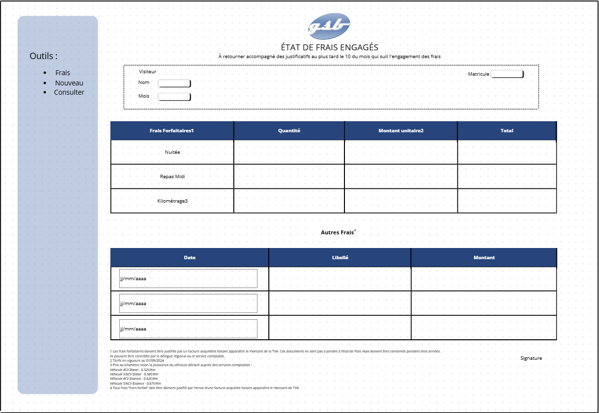
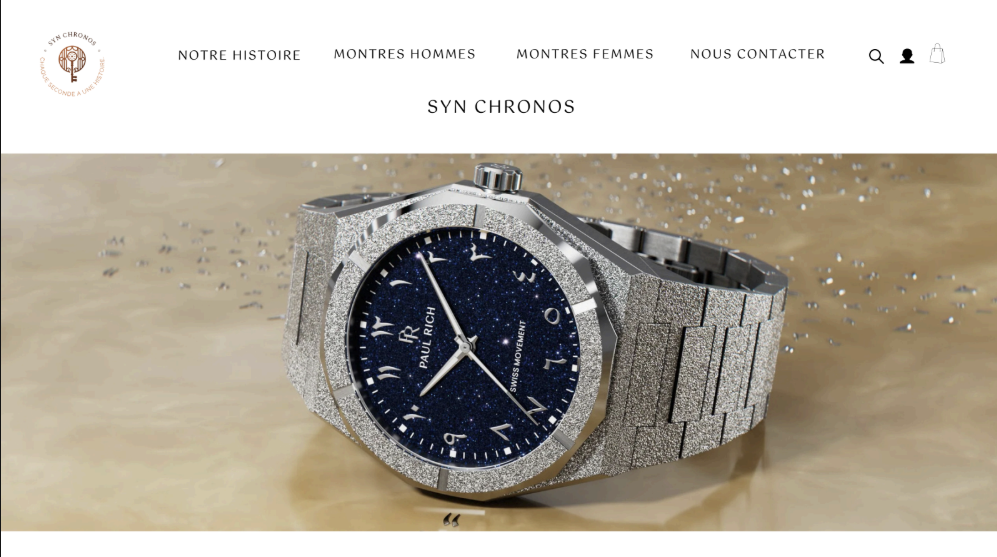
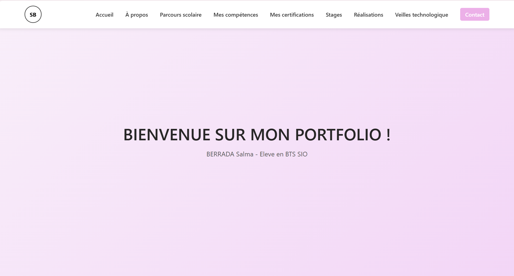

Mes compétences
Languages
Html
Css
C#
Java
Javascript
PHP
Python
MySQL
Logiciels / Outils
VS Code
Proxmox
WampServer64
GitLab
BERRADA Salma - Eleve en BTS SIO
Enchantée, je suis Salma BERRADA !
Actuellement en deuxième année de BTS SIO au sein du lycée Ozenne à Toulouse, je me spécialise en SLAM (Solutions Logicielles et Applications Métier).
Ma formation au lycée Ozenne m'apporte une solide base technique, me permettant de concevoir des outils logiciels sur mesure et d'apporter des réponses concrètes aux défis technologiques que rencontrent les entreprises aujourd'hui.
Ce portfolio est le reflet de mon évolution. J'y ai regroupé mes travaux académiques ainsi que mes projets personnels et professionnels pour vous donner un aperçu de mon savoir-faire et de ma curiosité technique.
Pour en savoir plus sur mon profil, vous pouvez consulter mon CV en cliquant ci-dessous :
Télécharger mon CVAprès mon baccalauréat, je me suis orientée vers un BTS SIO. J'y ai acquis des compétences solides en développement d'applications, en gestion de bases de données et en programmation.
Obtention du Baccalauréat Général avec mention Assez Bien.
Un parcours axé sur les Mathématiques et les Sciences Économiques et Sociales (SES), m'ayant permis de développer un esprit d'analyse et de rigueur avant de m'orienter vers l'informatique.
📍 VOIR SUR LA CARTEHtml
Css
C#
Java
Javascript
PHP
Python
MySQL
VS Code
Proxmox
WampServer64
GitLab
Attestation de suivi - Obtenue en Décembre 2025
Toulouse, France
26 Mai 2025 - 27 Juin 2025 Première année de BTS
12 Janvier 2026 - 20 Février 2026 Deuxième année de BTS

Application web permettant aux délégués médicaux de saisir leurs frais forfaitaires (nuitées, repas, km) et hors-forfait. Interface structurée pour une saisie rapide et un suivi rigoureux des remboursements.


Conception et réalisation de ce portfolio avec animations fluides et formulaire fonctionnel.
La veille technologique consiste à s'informer de façon systématique sur les dernières innovations de son secteur pour anticiper les évolutions du marché.
Le but d'une veille technologique est d'anticiper les innovations et les évolutions du marché pour maintenir ses compétences à jour et rester compétitif.
Pour ma veille technologique et de cybersécurité, j'utilise Inoreader afin de centraliser mes flux RSS et Twitter (X) pour suivre les experts du secteur et obtenir des informations en temps réel sur les dernières innovations.
Vous avez une question ou souhaitez discuter ? Remplissez le formulaire ci-dessous !